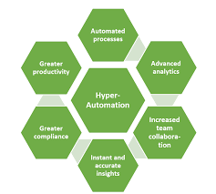
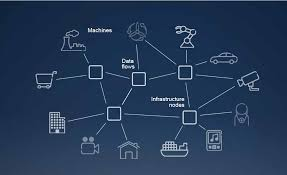

Hyperautomation
Hyperautomation is Hyperautomation is the application of advanced technologies like AI and machine learning (ML)
to augment workers and automate processes in ways that are significantly more impactful that traditional automation capabilities.
As no single tool can replace humans, hyperautomation involves using multiple tools in symphony, including robotic process
automation (RPA), intelligent business management software (iBPMS) and AI, with the goal of increasingly AI-driven decision making.
It’s the next step beyond RPA, further replacing human involvement in physical and digital tasks, and eventually the complete
decision-making process.
Multiexperience

Multiexperience is Multiexperience refers to the various permutations of modalities (e.g., touch, voice and gesture),
devices and apps that users interact with on their digital journey across the various touchpoints.
Multiexperience development involves creating fit-for-purpose apps based on touchpoint-specific modalities, while at the same time ensuring a consistent user
experience across web, mobile, wearable, conversational and immersive touchpoints.
Distributed Cloud
Distributed Cloud is Distributed cloud is the application of cloud computing technologies to interconnect data and applications
served from multiple geographic locations.
Distributed, in an information technology (IT) context, means that something is shared
among multiple systems which may also be in different locations. Distributed cloud speeds communications for global services and
enables more responsive communications for specific regions.